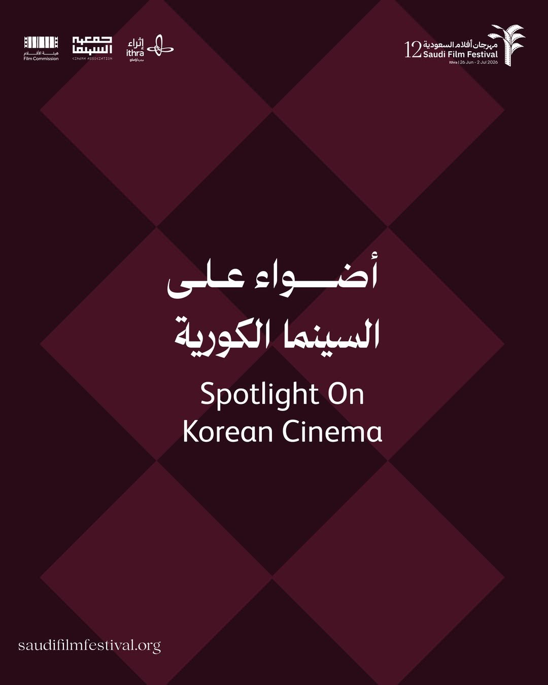
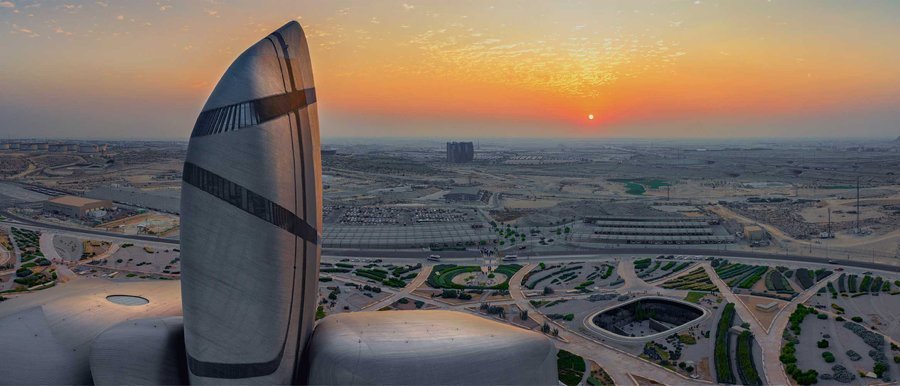
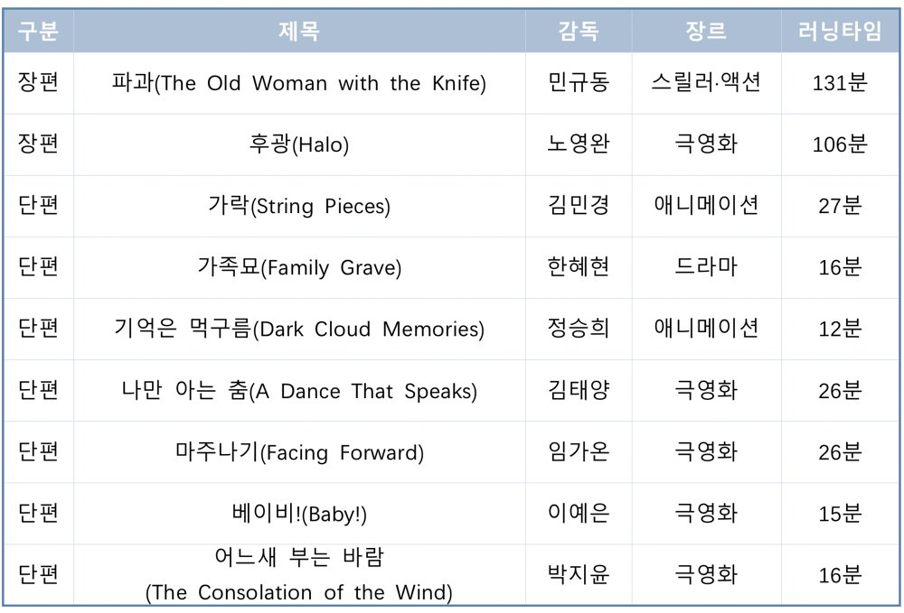
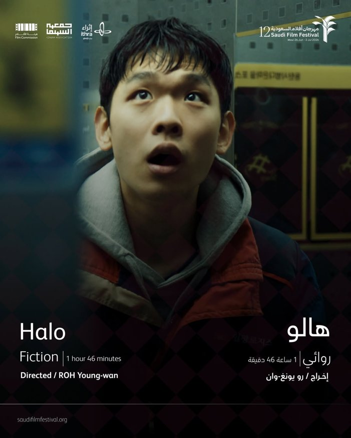

사우디아라비아를 대표하는 영화제인 '사우디 필름 페스티벌(Saudi Film Festival)'이 올해 제12회를 맞아 '한국 영화 스포트라이트(Spotlight on Korean Cinema)' 특별전을 선보인다. 빠르게 성장하고 있는 사우디 영화산업과 세계적으로 영향력을 넓혀가고 있는 한국 영화가 한자리에 모이는 자리로, 현지 영화계와 관객들의 관심이 모이고 있다.

한국 영화 특별전 홍보 이미지 — 출처: 사우디 필름 페스티벌 인스타그램(@saudifilmfestival)
사우디 최장수 영화제에서 만나는 한국 영화
사우디 필름 페스티벌은 2008년 시작된 사우디 최장수 영화제로, 영화협회(Cinema Association)가 주관하고 킹 압둘아지즈 세계문화센터 이트라(Ithra)와 협력해 운영된다. 또한 사우디 문화부 산하 영화위원회(Film Commission)의 지원을 받고 있으며, 현재는 사우디 영화 산업의 성장과 변화를 보여주는 대표적인 영화제로 자리매김했다. 영화제가 열리는 이트라는 사우디 국영 석유기업 아람코(Aramco)가 설립한 세계문화센터로, 사우디를 대표하는 복합문화공간 가운데 하나이다. 2018년 공식 개관 이후 공연장과 영화관, 도서관, 전시장, 창의교육 공간 등을 갖춘 문화 플랫폼으로 성장했으며 국제 영화제와 공연, 전시, 창작 프로그램을 꾸준히 유치하며 중동 지역 문화 허브 역할을 확대하고 있다.

킹 압둘아지즈 세계문화센터 이트라(Ithra) 전경 — 출처: 아람코(Aramco) 홈페이지
올해 영화제는 당초 2026년 4월 개최될 예정이었으나 보다 내실 있는 프로그램 구성과 국제 교류 일정을 조정하면서 6월 25일부터 7월 1일까지 동부 다란(Dhahran)에서 열린다. 올해의 주제는 '여정(The Journey)'으로, 영화가 기획 단계에서 완성작으로 만들어지기까지의 과정과 창작자들의 성장에 주목한다.
특히 올해는 부산국제단편영화제(Busan International Short Film Festival, BISFF)와 협력해 '한국 영화 스포트라이트(Spotlight on Korean Cinema)' 특별전을 마련하고 한국 영화 9편을 선보인다. 드라마와 스릴러, 애니메이션, 예술영화 등 다양한 장르의 작품을 통해 한국 영화의 다채로운 면모를 선보일 예정이다.

사우디 필름 페스티벌 '한국 영화 스포트라이트' 상영작 — 출처: 사우디 필름 페스티벌 홈페이지, 통신원 재구성
장편 부문에서는 민규동 감독의 <파과(The Old Woman with the Knife)>와 노영완 감독의 <후광(Halo)>이 초청됐다. 단편 부문에서는 김민경 감독의 <가락(String Pieces)>, 한혜현 감독의 <가족묘(Family Grave)>, 정승희 감독의 <기억은 먹구름(Dark Cloud Memories)>, 김태양 감독의 <나만 아는 춤(A Dance That Speaks)>, 임가온 감독의 <마주나기(Facing Forward)>, 이예은 감독의 <베이비!(Baby!)>, 박지윤 감독의 <어느새 부는 바람(The Consolation of the Wind)> 등이 상영된다.
영화 상영 넘어 문화교류의 장으로
이번 특별전에는 <후광(Halo)>의 노영완 감독과 배우 최강현이 직접 사우디를 방문해 관객과의 대화(GV)와 영화인 교류 프로그램에 참여한다.
<후광>은 노영완 감독의 장편 데뷔작으로 제38회 도쿄국제영화제 아시안 퓨처(Asian Future) 부문에서 최우수 작품상을 수상했다. 해당 부문에서 한국 영화 최초 수상작으로 이름을 올리며 주목받았다. 현지 관객들은 작품 제작 과정과 창작 배경에 대한 이야기를 직접 들을 수 있으며, 한국과 사우디 영화인들이 만나 교류하고 협력 가능성을 논의하는 시간도 마련될 예정이다.

영화 '후광(Halo)' 홍보 이미지 — 출처: 사우디 필름 페스티벌 홈페이지
주사우디아라비아 한국대사관과 사우디 지역 한인회의 협력으로 한국 음식과 문화를 체험할 수 있는 부스도 운영될 예정이다. 영화 상영과 함께 한국의 식문화와 전통·현대문화를 소개함으로써 한국 콘텐츠에 관심이 높은 사우디 젊은 세대가 한국 문화를 보다 친숙하게 접할 수 있는 기회가 될 것으로 보인다.
최근 사우디 젊은 세대를 중심으로 한국 드라마와 영화, 음악 등 한국 콘텐츠에 대한 관심이 꾸준히 높아지는 가운데 이번 특별전은 상업영화뿐 아니라 한국 독립·예술영화를 현지 관객들에게 소개하는 기회가 된다. 특히 한국과 사우디 영화인들이 직접 만나 작품과 제작 경험을 공유하고 협력 가능성을 논의한다는 점에서 주목할 만하다. 이번 특별전은 한국 영화 소개를 넘어 양국 영화 산업 간 네트워크를 확대하고 향후 공동 제작과 문화 산업 협력 가능성을 모색하는 교류의 장으로 기능할 전망이다.
사진출처 및 참고자료
— 사우디필름페스티벌 홈페이지, en.saudifilmfestival.org
— 사우디필름페스티벌 인스타그램(Instagram), instagram.com/saudifilmfestival
— 이트라(Ithra) 홈페이지, ithra.com
— 부산국제단편영화제 홈페이지, bisff.org
— «사우디 프레스 에이전시(Saudi Press Agency)» (2026. 04. 03). "Saudi Film Festival Reschedules 12th Edition to June 2026," spa.gov.sa
— 아람코(Aramco) 홈페이지, aramco.com